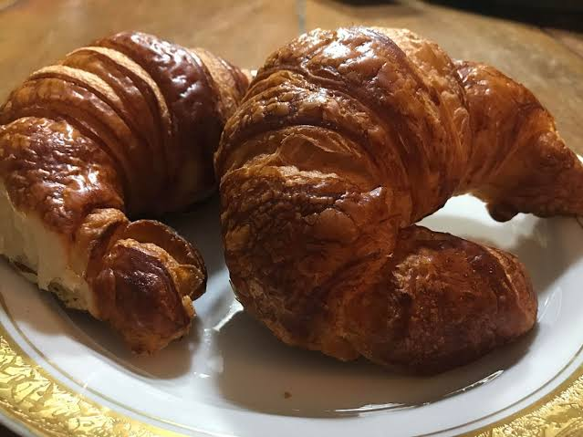
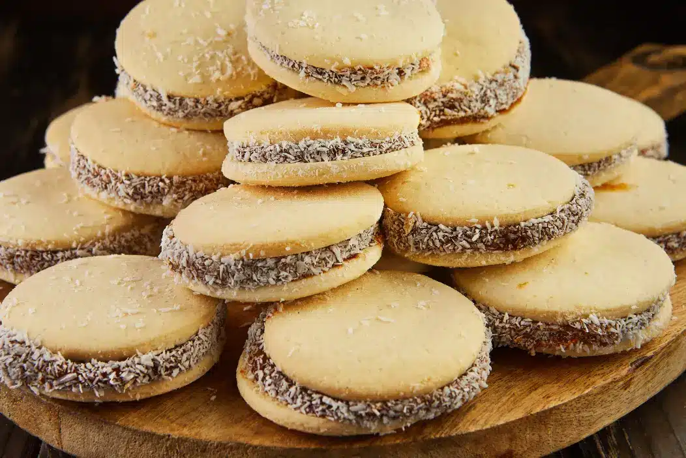

Cafézin Puro
Nossa jornada começa no século XVIII, quando os primeiros grãos de café chegaram ao Brasil para mudar o nosso destino. Muito mais do que uma bebida, o café foi o motor que impulsionou o país durante o Império e a República Velha.

Pão de Queijo
O pão de queijo é uma iguaria tradicional da culinária brasileira, patrimônio cultural e gastronômico do estado de Minas Gerais. Caracteriza-se por pequenos pãezinhos assados, redondos, com uma casca levemente crocante por fora e uma massa extremamente macia e elástica por dentro.

Croissant
O croissant é um pão de massa folhada, leve e amanteigado, com uma forma de crescente. É um dos produtos de panificação mais populares do mundo, consumido principalmente no café da manhã ou como lanche.

Bolachinhas
As bolachinhas são um doce tradicional brasileiro, geralmente feitas com farinha, açúcar, manteiga e ovos. São populares em diversas regiões do país e podem ser servidas como lanche ou sobremesaz.